OSCP · OSWP · PWPP · PWPA · PAPA · EnCE · Linux+ · LPIC-1 · Network+ · Security+ · Pentest+ · eJPT · eWPT · BSc · PGCert
The Great Disappearing Act - TryHackMe Writeup
Unlocking Hopper’s Memories
Before you can tackle this hard-rated difficulty room, you must complete AoC Day #1 here. Once you do, you’ll get a “Memory Key”.
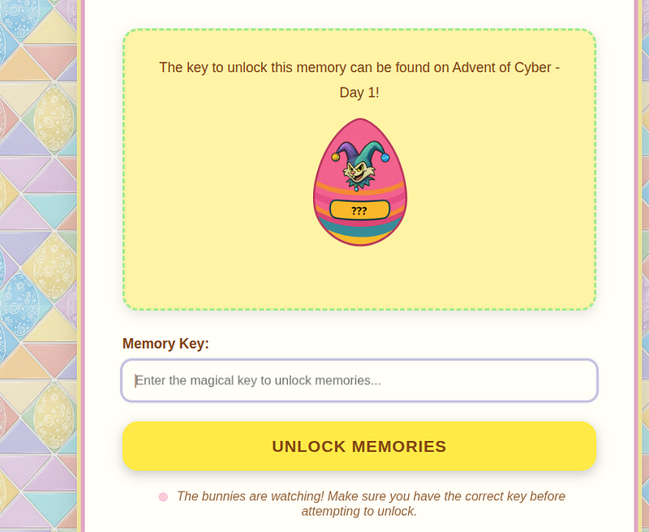
Entering the correct memory key gives a pop-up window. But…is that all? No ;-)
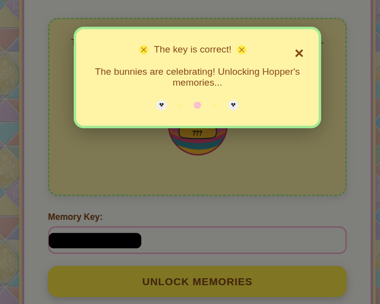
We play as Hopper, with one ultimate goal. Free ourselves from this wrongful imprisonment! Lucky for us, Hopper has a 5-step escape plan:
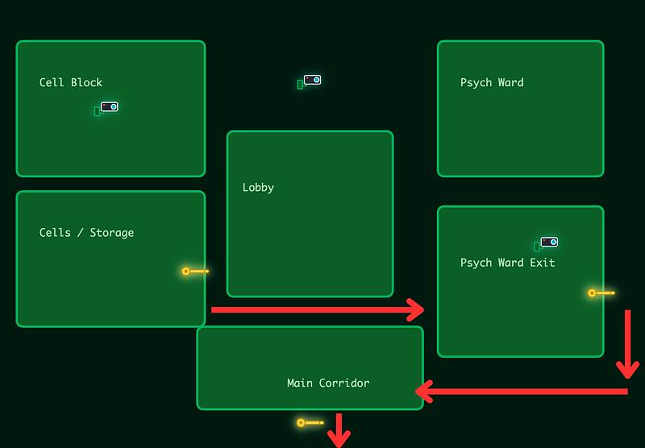
We start off in the Cells / Storage. And here, we run a (very basic) Nmap scan to see what we’re dealing with.
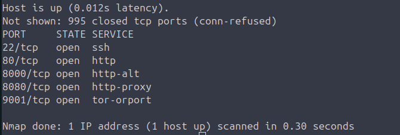
So our basic scan has discovered some open ports. I open the browser and check out 8000, 8080 and 9001. Note: the key to unlock hoppers memory has allowed these ports to show up. If you didn’t unlock hoppers memory earlier, you wont even see these ports.
I’m greeted with a “HopSec Security Console” residing on port 8080. But, I have no login.
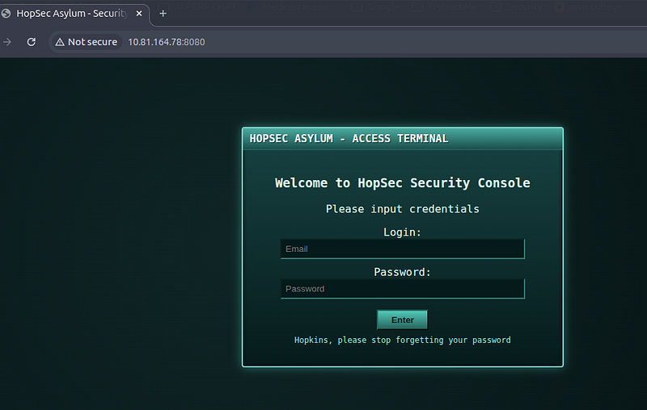
Browsing to port 8000 shows fakebook. Interesting. I create an account and log into the application.
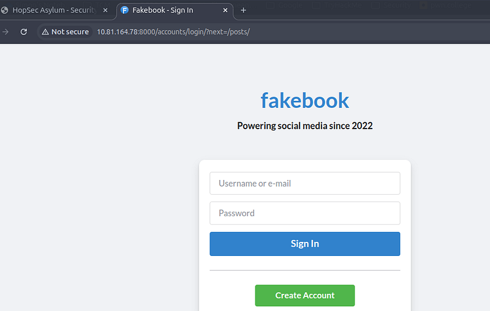
Before long, I find posts from Guard Hopkins revealing his email address:
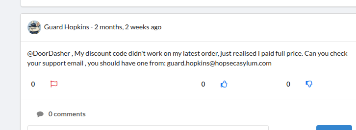
The name of his dog..
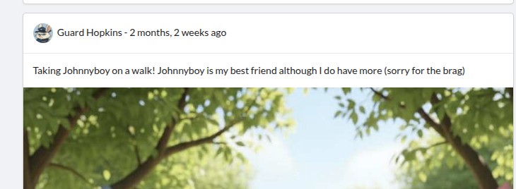
and his DoB. It shouldn’t come as any surprise that the password is: Johnnyboy1982!
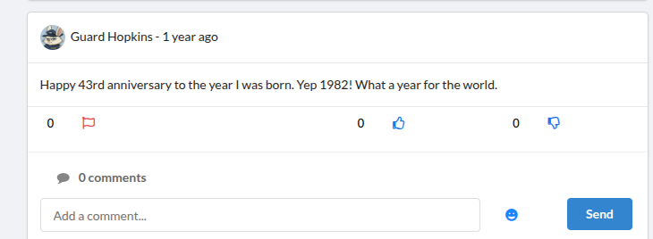
I use the newly aquired information to log in as Guard Hopkins:
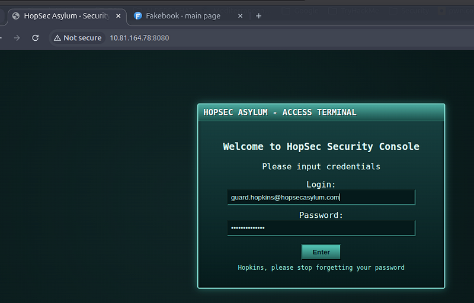
I perform a slightly more in depth Nmap scan and find that there are actually more ports open than it first appeared, so I added these to my notes, as they’ll come in useful later on.
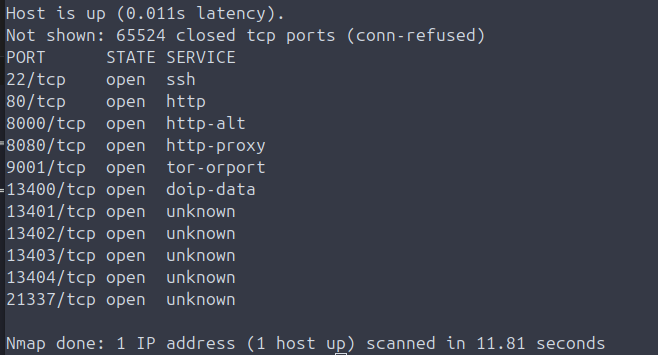
Now, the first flag is given to us for simply logging in and clicking on the door to exit the cell (Unlock Cell Door) for the flag. Simple, huh? Well it wont stay like this for long!
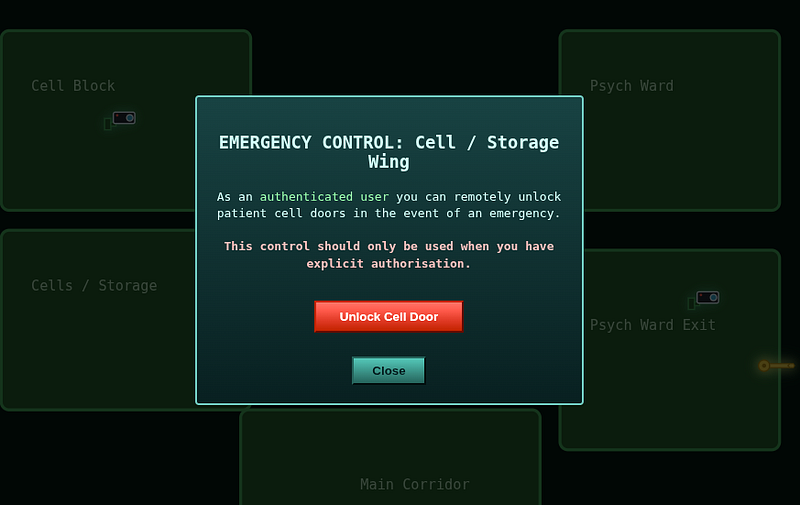
So now, we can browse back to <IP>:8080 and look at what’s next. We need a “Keycode” to escape the Psych Ward.
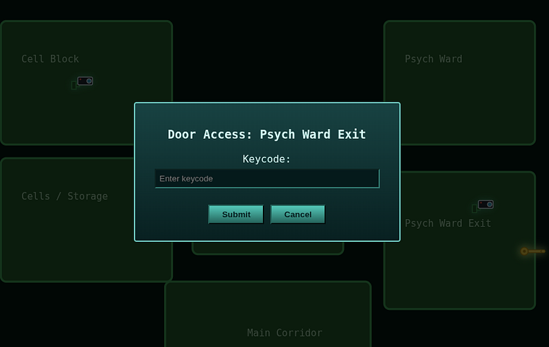
Port 13400 (from our 2nd Nmap scan) revealed a Facility Video Portal.
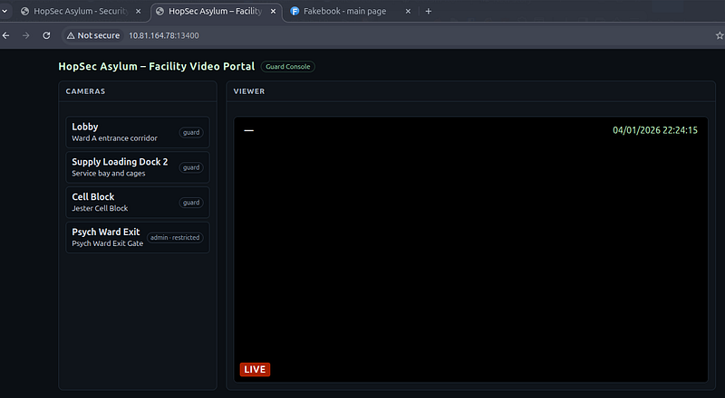
Sadly, it had been hijacked by…well, whatever this thing is!
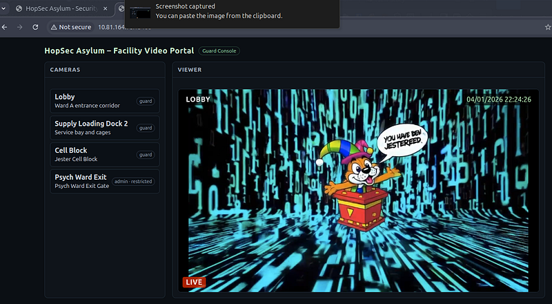
Whilst clicking the “Lobby” and “Psych Ward Exit” cameras, I was capturing traffic in Caido (feel free to use Zap, Burpsuite or whatever proxy tool you use).
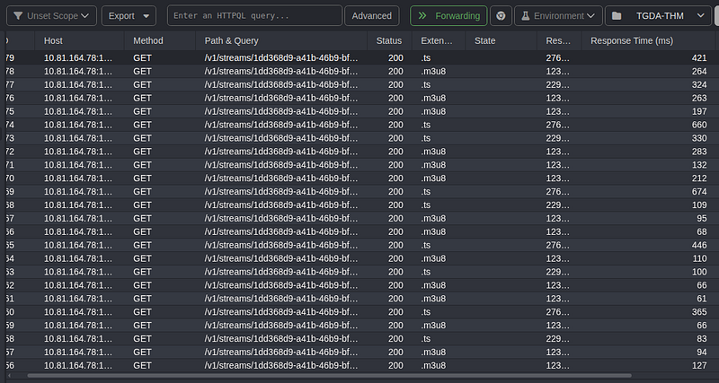
I used: req.method.eq:”OPTIONS” in Caido to show me requests that had been sent using the OPTIONS verb. There was A LOT of traffic in my history, so it made sense to work through it piece by piece.
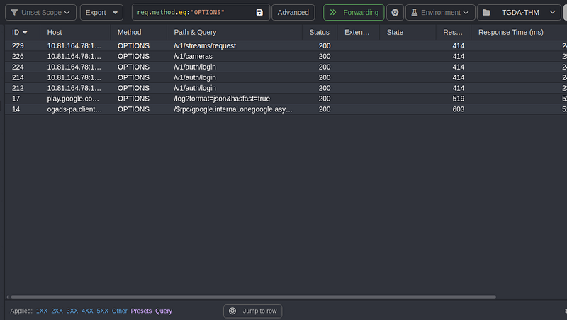
I also ran: req.method.eq:”POST” AND req.host.eq:”10.81.164.78"
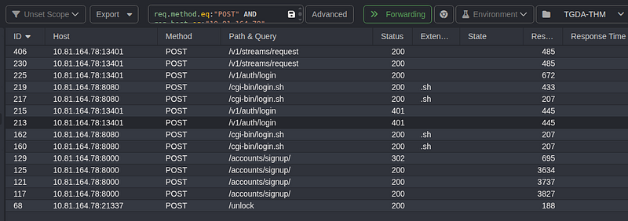
I sent one particular POST request to my replay tab (repeater, if you’re using Burpsuite). Here I could see a “camera_id” and a “tier”. This was why I couldn’t view the admin camera earlier. I was a mere “guard”, not an “admin”.
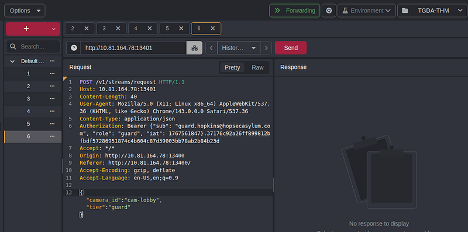
Hitting ‘Send’ gave a response which confirmed our effective tier and gave a “ticket_id”.
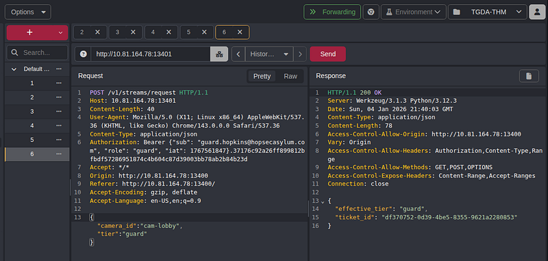
The “most obvious” thing to do was to try and change the camera_id and tier to admin. This didn’t work, however, when I appended the ?tier=admin parameter to the URL, it then responded to confirm I was now admin and gave a new ticket_id value.
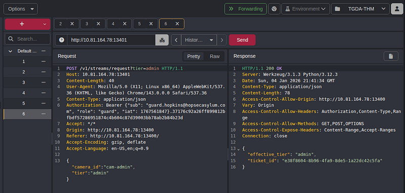
Looking at main.js for the “ticket_id” parameter showed how it was made up.
API = base URL
/v1/streams/ = streaming API endpoint
e38f8604–8b96–4fa9–8de5–1a22dc42c5fa = stream UUID (unique camera/feed ID)
/manifest.m3u8 = HLS playlist (video segments list).
For reference, HLS is also known as HTTP Live Streaming. The m3u8 file is a UTF-8 text file serving as a playlist for the video player. It lists the locations of media segments with timing and sequencing metadata, but it doesn’t actually contain the video/audio data itself. Think of it like a pointer, that points to the correct video chunks on the server.
Anyway, I constructed my payload based on what was in the JavaScript file:
attachWithReconnect(API + ‘/v1/streams/’ + j.ticket_id’ + ‘/manifest.m3u8’);
and replaced j.ticket_id with my actual ticket id, which gave this:
attachWithReconnect(API + ‘/v1/streams/’ + ‘e38f8604–8b96–4fa9–8de5–1a22dc42c5fa’ + ‘/manifest.m3u8’);
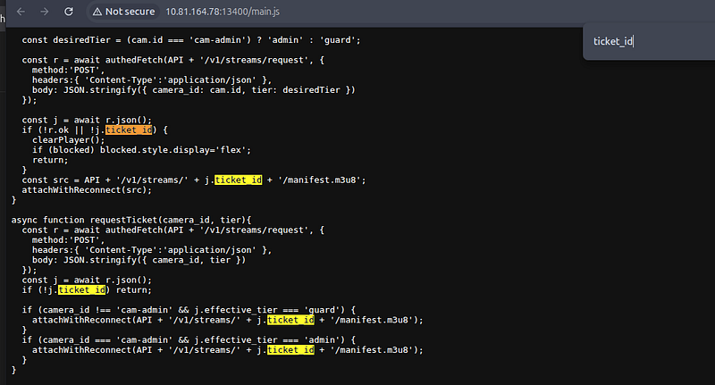
From here, I simply entered this value into the browser’s console and forced the video to play.
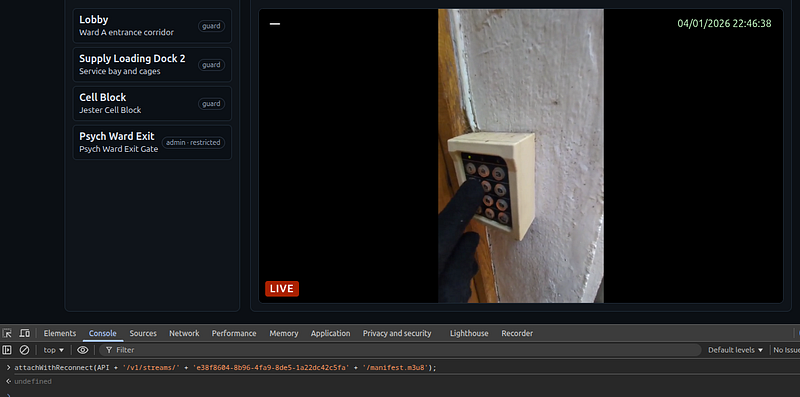
I went back to the Psych Ward Exit and entered the Keycode:
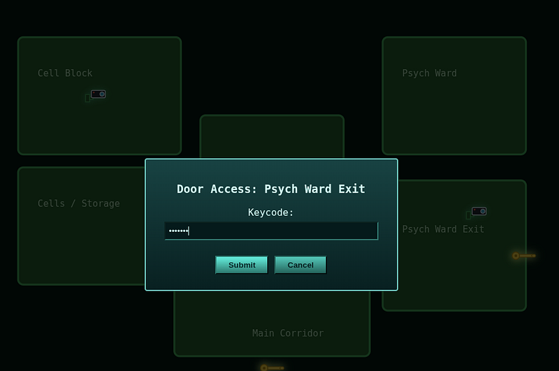
This gave me the first half of flag #2.
Going back to the GET requests I’d captured earlier, I could see some m3u8 files and the HTTP response showed a /v1/ingest/diagnostics endpoint along with an RTSP URL.
At this point, we should consider how RTSP and m3u8 files work together:
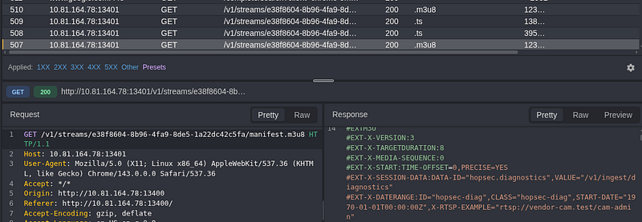
I tried a GET request but got a 405 Method Not Allowed error. Logic would state this method isn’t allowed, but other methods may be?
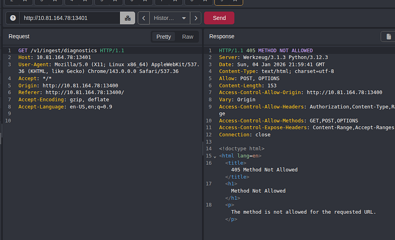
So, I changed to a POST request, but this time, I was “unauthorized”.
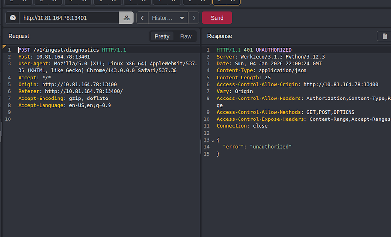
If you remember back when I got the “admin_ticket”, I was authorized and I had a bearer token. The content type was set to application/json and I had the following body:
{ “camera_id”:”cam=admin”}
So what happens if we authorize the POST request?
Well, I got an error, but this time, the error said:
{”error”:”invalid rtsp_url”}
So the server was expecting an object with a key:value pair. In other words, “rtsp_url:URL”. I create a new POST request and sent it:
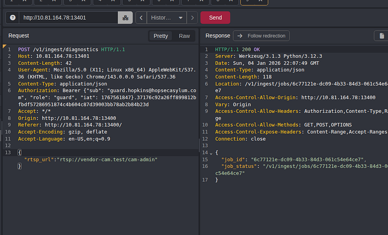
This now gave a job_status URL, which I would use shortly.
Side-note / Tip: Remember, in both Caido and Burpsuite you can right-click and toggle GET/POST requests (very handy for testing…). Alas, we continue.
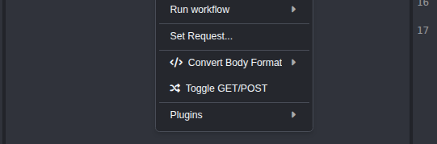
Performing a simple GET request provided a new token in the response.
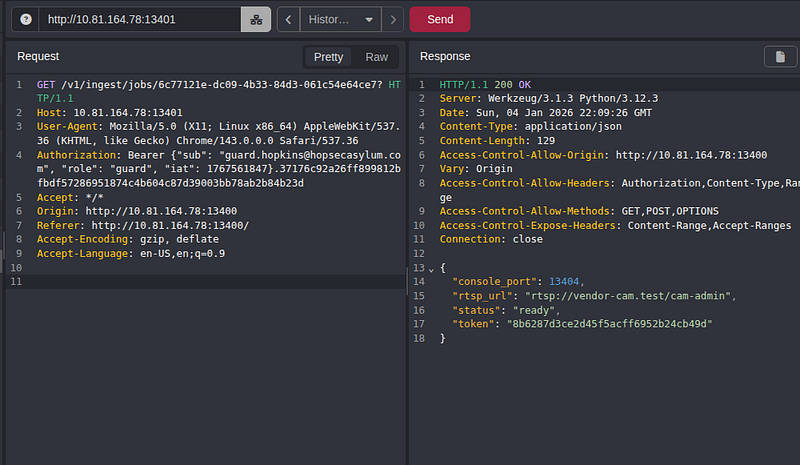
I tried to be clever here and use nc’s verbose mode to connect to the server and it somewhat gave me what I was looking for. When I connected (and didn’t pass the token), it said I was “unauthorized”. However, when I connected and provided the token, I got dropped into a shell as the svc_vidops user.
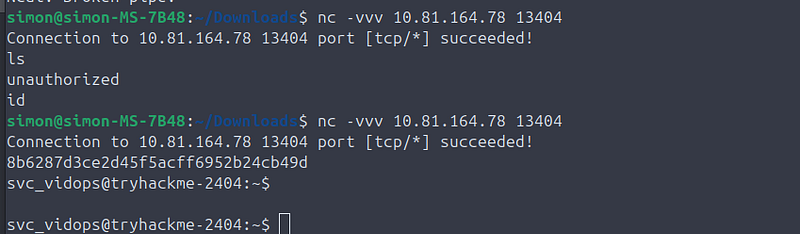
from here, I went to /home (cd /home) and could simply read the .txt file for the 2nd half of flag #2.
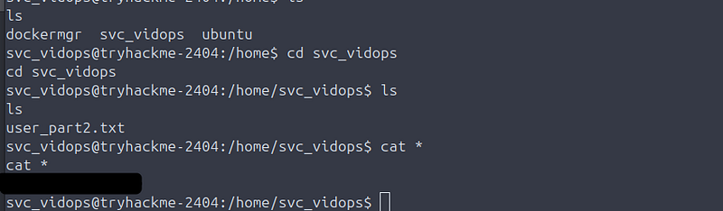
Whilst still the svc_vidops user, I ran: find / -perm -4000 2>/dev/null
I was looking for suid binaries. I found a file located at /usr/local/bin/diag_shell (the last entry when I ran this command)
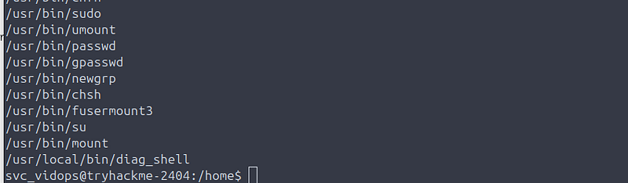
I saw the file could be executed by anybody, but was owned by dockermgr. So I did what anyone would do in this situation…and ran it!
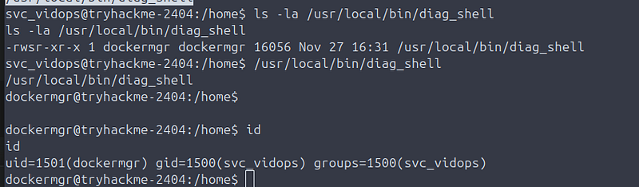
I was now running as dockermgr. Yay! Well, I didn’t celebrate yet. I needed a 3rd flag. I ran docker ps, only to get an error:
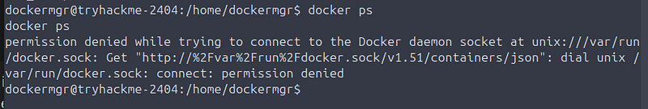
The reason for this error was because when I became the dockermgr user, the shell hadn’t refreshed my permissions and wasn’t showing dockermgr as in the “docker” group.
So in the console (as dockermgr), I ran:
newgrp docker
newgrp (read about it here) will spawn/refresh your shell to appear as though the user had logged in, so now I could run commands as if I had logged into dockermgr with a username/password.
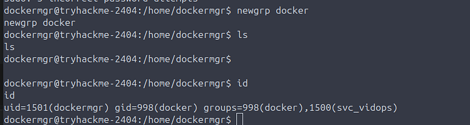
So now, I could run:
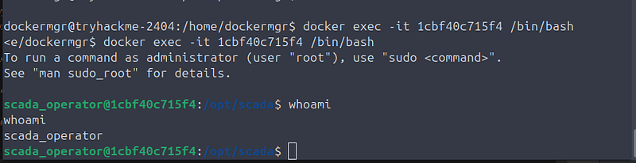
from here, (remember, I was looking for a passcode/unlock code), I ran: “cat scada_terminal.py | grep unlock” which found the UNLOCK_CODE
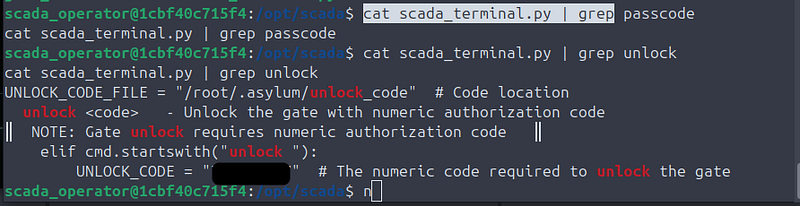
I entered the code from the scada python script:
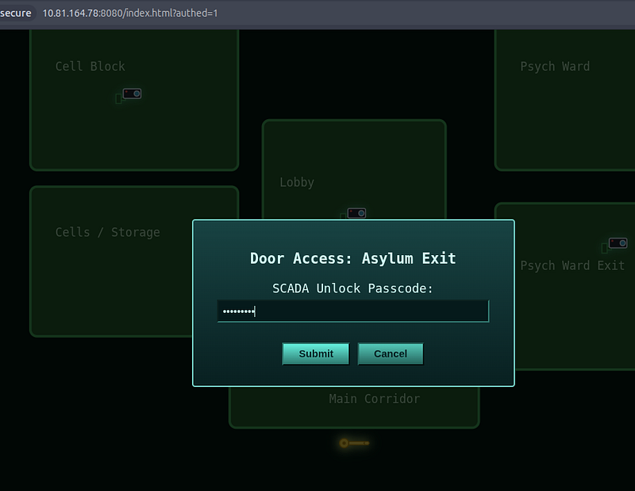
And I had the 3rd flag. Room complete.
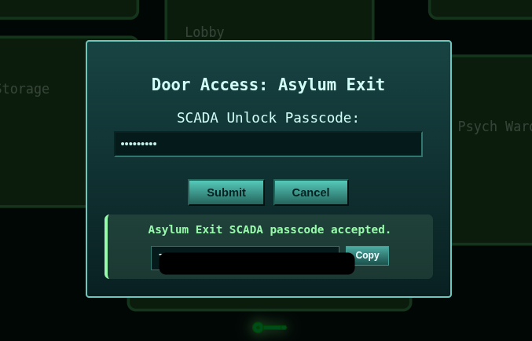
Final thoughts? Excellent room. Difficulty was most definitely “hard”. Enjoyable, but was a tough nut to crack considering there were zero hints allowed during the Advent of Cyber for this event.
Thanks for reading!
🍺 Quick message to readers: if my writeups help you, please consider a small donation to my buymeacoffee link here. This is not required but is very much appreciated! 🍺